デジクリゼミ 2026 / 第2回 モーションアート・アニメ
障害のある人と学ぶデジクリゼミことばから、
動く作品へ。
AIと、ながめて楽しむアートやアニメをつくろう。
2026年10月6日（火）13:30–15:00 / 講師 伊藤 尚祐
はじめに
今日がはじめてでも、大丈夫。
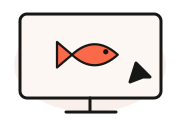
前回も来た人
操作を思い出して、
今日は「動き」を工夫しよう。
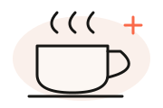
自分のペースで
見ているだけでも、
途中で休んでも大丈夫。
文字でも、声でも。困ったらチャットで知らせてください。
前回の振り返り / 9月29日 アプリ回
前回は、ことばでアプリづくり。
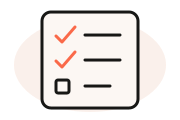
ToDoアプリをつくった
やることを追加して、
できたらチェック。
ためして、変えた
文字や色を変えたり、
別のアプリに挑戦したり。
 前回のアプリの参考例
前回のアプリの参考例思い出してみよう：AIにどんなお願いをしましたか？ 初参加の人は、変えてみたいところをひとつ。
講師紹介

伊藤 尚祐
日本アイ・ビー・エム株式会社 エンジニア
京都芸術大学 非常勤講師／テックルズ エンジニア
通信装置の研究開発、IoTサービス構築を経て、2022年に日本IBMへ。
2024年から京都芸術大学でAIによるアプリ開発を教え、テックルズで福祉の課題に取り組む。
好きなこと → 歴史。最近は、家族とのキャンプも。
テックルズで作ったアプリと、試してもらっている様子
誰もが創造性や表現力を発揮できる仕組みづくりへ。
みなさんの自己紹介
チャットに書いて、ひとこと話そう。
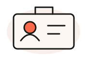
お名前
呼んでほしい名前でどうぞ。
ふだんAIをどう使う？
使っているAIと、その使い道。
「はじめて」も歓迎です。
今日の期待
やってみたいこと、
楽しみにしていること。
書いた内容を、一人ずつ短く紹介してください。
今日の流れ
つくる → 動かす → 自分好みに。
13:30–13:35事務局連絡5分
13:35–13:45振り返り・自己紹介・準備10分
13:45–14:15魚の群れか猫のアニメをつくる30分
14:15–14:20ひと休み5分
14:20–14:45好きな作品を改良／自由制作25分
14:45–14:55作品を見せ合う・振り返る10分
14:55–15:00事務局連絡5分
最初の作品は、どちらかひとつでOK。余裕があれば、両方つくってみよう。
最初の作品を選ぼう
魚の群れと、宇宙に行く猫。
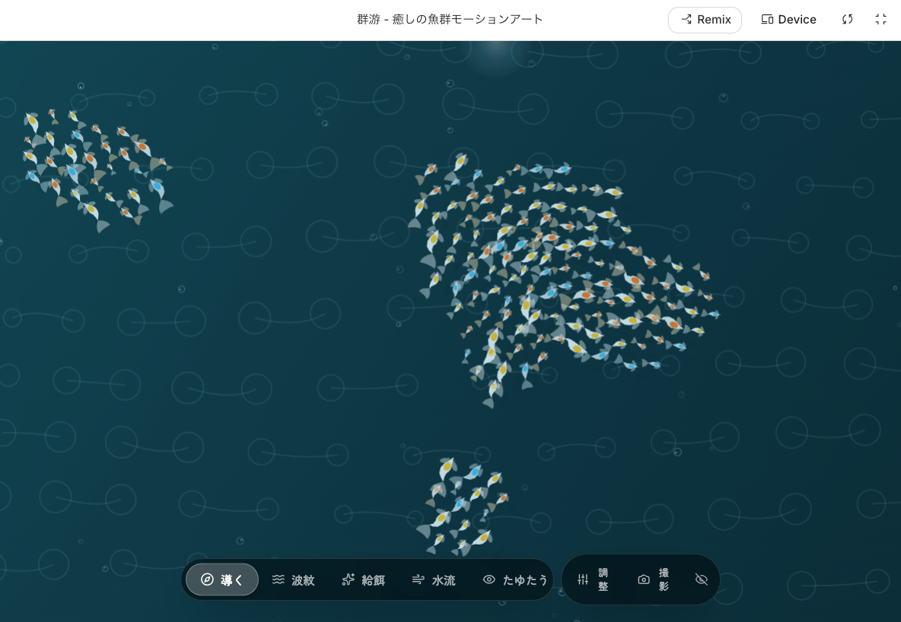
01 モーションアート
くり返す動きや変化を、ながめて楽しむ。
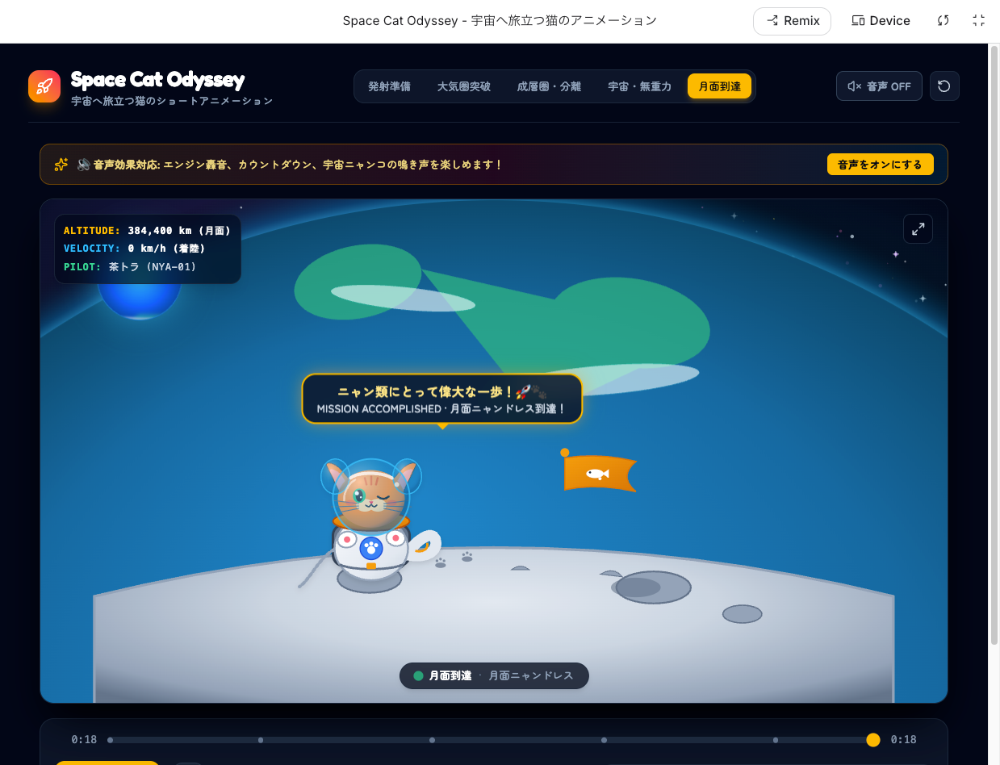
02 短いアニメーション
動きと場面の変化で、小さな物語をつくる。
魚の群れか猫のアニメ、好きなほうをひとつ。余裕があれば両方でもOK。
準備するもの
つくるための道具を、準備。
ネットにつながる端末
パソコン、タブレット、
スマートフォンのいずれか。
Google AI Studio の「Build」
Googleアカウントでログインします。
Buildを開く ↗
操作に迷ったら、講師やサポートする人に知らせてください。
Google AI Studioを開いたら
ここから、アプリをつくります。

① New app
新しいアプリをつくる。
② 入力欄
つくりたいものを書く。
③ マイク
声で伝えてもOK。
赤い枠の場所を、一緒に見つけてみましょう。
13:45–14:15 / 魚の群れを選んだ人
01 小さな魚の群れをつくろう。
Buildの新しい作品で、次のお願いを送ります。
小さい魚の群れを動かしててながめる癒し系のモーションアートを作って
送ったら、AIがつくるのを待ちます。
待っている間に、仕組みを見てみよう。
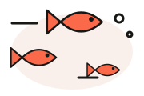
お願いの文章は、そのままコピーして使えます。
13:45–14:15 / 猫のアニメを選んだ人
02 猫を宇宙に行かせよう。
Buildで新しい作品を開き、次のお願いを送ります。
猫が宇宙に行く短くて動きのあるアニメーションを作って
送ったら、AIがつくるのを待ちます。
できたら、最初から最後まで見てみよう。
ひとつできたら、それを楽しんでOK。余裕があれば、もう片方を新しい作品でつくろう。
待ち時間に / 動く作品の仕組み
AIが書く。ブラウザが動かす。
AIがコードを書く
コード＝コンピューターへの
動かし方の指示。
ブラウザが描く・動かす
コードを実行して、
画面に魚を表示する。
少しずつ場所や形を変えて描くと、動いて見えます。
今日はコードを書けなくてもOK。変えたいことを、ことばで伝えます。
作品のサンプル
案内で見た作品も、動きの表現。
こんな雰囲気も。
色や形、動く速さ。
組み合わせると、
作品の印象が変わります。
事前の講座案内に掲載した
サンプルです。
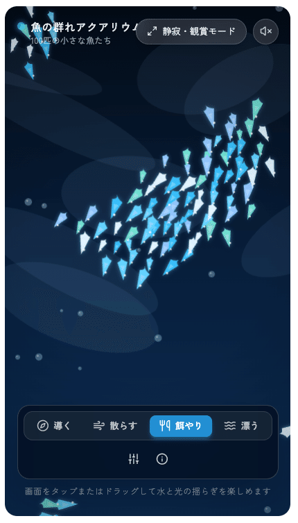
作品イメージ（静止画像）この見た目にそろえる必要はありません。自分が好きな雰囲気を探そう。
作品のサンプル
魚たちは、どんなふうに泳ぐ？
まずは、ながめよう。
群れになっている？
速さは心地よい？
色は、どんな感じ？
ひとつ変えるなら？
「もっとゆっくり泳いで」
参考例です。同じお願いでも、見た目や動きは変わります。
前回と同じコツを、今日も
伝える → ためす → 変える。
動きをためす
しばらくながめて、
速さや色を確かめる。
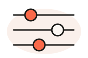
ひとつ変える
「泳ぐ速さを半分にして」
変わったら、もう一度見る。
前回参加した人は、今度は「動き」を具体的に伝えてみよう。
できた作品を修正する
動かして、もうひとこと。

① Preview
右側で動きを確かめる。
② 左下の入力欄
「魚をゆっくり泳がせて」
とお願いする。
③ マイクでもOK
声で修正を伝える。
画面は前回のToDoの例です。作品が変わっても、修正の流れは同じ。
猫の生成を待つ間に
「はじめ・途中・おわり」を考える。
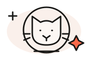
はじめ
猫がロケットに乗る。
どんな顔をしている？
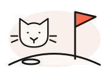
おわり
月に到着。旗を立てる。
最後はどんな気持ち？
例です。あなたなら、どんな宇宙の旅にしたい？
作品のサンプル
猫の宇宙旅行、どうなった？
変化を見てみよう。
猫やロケットは動く？
場面は切り替わる？
おわりは分かる？
ひとつ変えるなら？
「最後に猫が手を振って」
参考例です。同じお願いでも、見た目や動きは変わります。
困ったときは
うまくいかないところも、伝えよう。
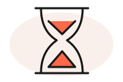
まだ生成中
完了するまで待とう。
待つ間に、次の工夫を考える。
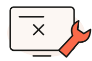
画面が出ない
「プレビューが表示されません。
直してください」と伝える。
思った動きと違う
「猫が止まっています。
ロケットに乗って動くようにして」
エラーが出たら、その文を添えて相談。難しければ講師やサポートへ。
ひと休み / 5分
ちょっと、ひと休み。
水を飲んだり、体を伸ばしたり。
画面から目を離して、ひと息。
5分後に再開します。
このあとは、好きな作品の改良か、新しい作品づくりへ。
14:20–14:45 / 自由制作 25分
ここからは、好きなほうへ。
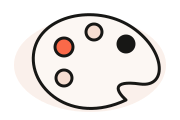
今の作品を、自分好みに
魚の群れか、宇宙の猫を選ぼう。
同じチャットで、
色・動き・お話を変えてみよう。
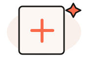
別の作品に挑戦する
Buildで新しい作品をつくろう。
好きな景色や生き物を、
動かしてみよう。
まずは「ひとつ変えて、確かめる」が目標。途中で選び直してもOK。
工夫のヒント
何を変えると、気持ちが変わる？
色・雰囲気
魚：「海を夜の青色にして」
猫：「星をカラフルにして」
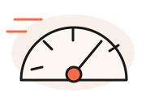
速さ・動き
魚：「ゆったり大きく旋回して」
猫：「発射のときに揺れて」
楽しみ方
魚：「動きを止めるボタンを」
猫：「もう一度再生するボタンを」
一度に全部変えずに、ひとつずつお願いしよう。
新しい作品のヒント
好きなもの × 動き。
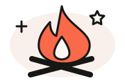
景色から
キャンプの焚き火がゆれる。
星空がゆっくり流れる。
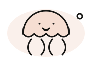
生き物から
クラゲがふわふわ漂う。
鳥が空をぐるぐる飛ぶ。
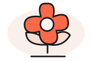
小さな物語から
犬が雲に乗って旅をする。
種から花が咲く。
自己紹介で出てきた「好き」も、作品の種になります。
アイデアを一緒に考えてもOK
使えるAIがあれば、相談しよう。
ChatGPT・Gemini・Claudeなど、使えるものでOK。
キャンプが好きです。ながめて楽しむモーションアートのアイデアを3つ考えて。気に入った案を選んだら、Google AI Studioに伝える短いお願いにまとめて。
好きな案を自分で選んで、Buildに貼り付けよう。
ほかのAIを使わずに、自分で考えたり、周りの人と相談したりしてもOK。
自分の作品を使ってみよう
自分で描いた絵も、動かせる。
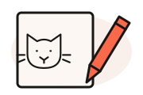
自分で描いた絵などの画像を添えて、
アニメーションをつくってもらえます。
① 画像を添える
入力欄の「＋」から画像を添付。
② 動かし方を伝える
このイラストを使って、
キャラクターをふわふわ
浮かせて。
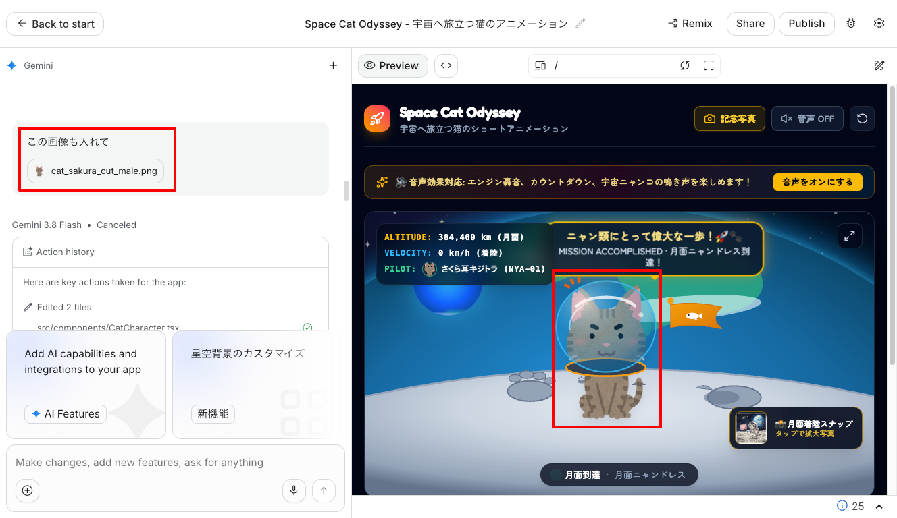
画像を添えてお願いすると、自分の絵が作品に登場。
自分の絵が動いたら、どんな感じ？ 好きな動きを試してみよう。
14:45–14:55 / 作品を見せ合おう
作品と、工夫したところを紹介しよう。
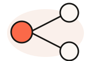
画面と、ひとこと
作品のキャプチャを会議のチャットへ。
「何が、どう動くか」も添えよう。
できる人は画面共有で、動きも紹介。
画像が難しければ、文字だけでもOK。
工夫をひとつ紹介
何をつくった？
どんなお願いで、何が変わった？
ほかの人の作品の好きなところは？
完成していなくても大丈夫。途中の作品や、発見も見せてください。
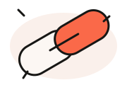
作品の共有 / URLをコピーしよう
つくった作品も、共有してみよう。
① 画面右上の「Share」を押す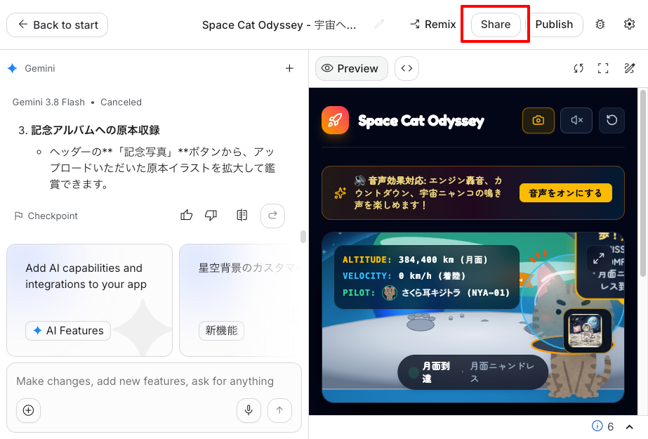
②「Public」を選ぶ → ③「Copy link」
Public: Anyone with the link can view（リンクを知っている人が閲覧可能）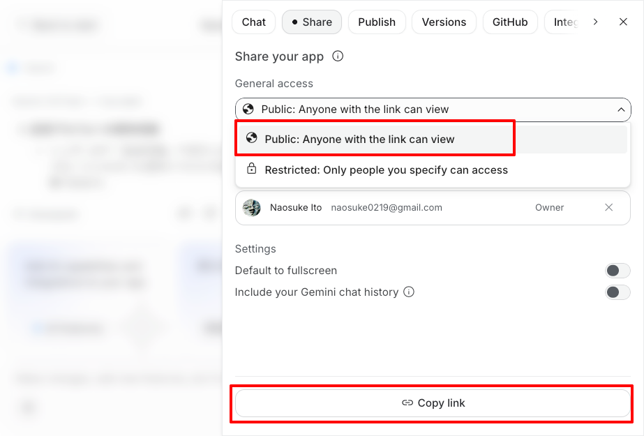
URLを開いてGoogle AI Studioにログインすると、ほかの人も作品を試せます。
よかったら、コピーしたURLを会議のチャット欄に貼って共有してね。
今日のまとめ / モーションアート・アニメ
動く作品をつくり、自分らしく変えた。
動く作品をつくった
魚の群れや、宇宙に行く猫。
ことばでお願いして、
動きを見て楽しんだ。
自分好みに工夫した
色・速さ・物語を変えたり、
好きな作品に挑戦したり。
自分の絵を使う方法も知った。
作品を見せ合った
作品や工夫を紹介。
URLで共有する方法を知り、
みんなの発見にふれた。
チャットにひとこと：今日いちばん楽しかったこと、または次につくりたいもの。
作品のサンプル
次回は、ゲームをつくろう。
10月20日（火）13:30–15:00
動く作品から、
遊べる作品へ。
次回もGoogle AI Studioを
使います。
 作品イメージ（静止画像）
作品イメージ（静止画像）次回の事前案内に掲載したサンプルです。